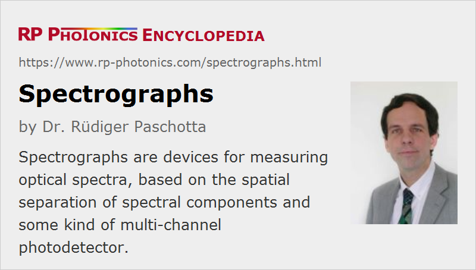

Spectrographs
Definition: instruments for spectrally analyzing light
Alternative term: spectroradiometers
More general terms: spectrometers, optical metrology instruments
German: Spektrographen
Categories: general optics, light detection and characterization, optical metrology
How to cite the article; suggest additional literature
Author: Dr. Rüdiger Paschotta
Spectrographs, also called spectroradiometers, are optical instruments which belong to the class of spectrometers. A spectrograph contains a device which can spatially separate different wavelength components of light (based e.g. on a diffraction grating) and measure their intensities with some kind of photodetector. (Early versions of spectrographs used photographic plates for recording spectra.) That way one can measure the optical spectrum of a light source.
The operation principles of spectrographs are explained in the article on spectrometers.
Note that optical spectra can also be measured in different ways, for example with scanning spectrometers. Those can work with a single photodetector instead of a multi-channel detector (e.g. a photodiode array), as required for a spectrograph.
Applications of Spectrographs
Some typical applications of spectrographs are:
- Stellar and solar spectrographs are used for analyzing in detail the radiation from stars. For example, one can measure the locations and strengths of certain absorption lines (Fraunhofer lines) for measuring chemical compositions and relative velocities.
- With a laboratory spectrograph, one may spectrally analyze fluorescence light e.g. from gas discharges or from active optical fibers.
- In spectral phase interferometry, one often requires a spectrograph for measuring the positions of minima and maxima in optical spectra. An intensity calibration is often not required.
- Spectrographs are also used for other methods of pulse characterization, for example for frequency-resolved optical gating.
Suppliers
The RP Photonics Buyer's Guide contains 11 suppliers for spectrographs.
Questions and Comments from Users
Here you can submit questions and comments. As far as they get accepted by the author, they will appear above this paragraph together with the author’s answer. The author will decide on acceptance based on certain criteria. Essentially, the issue must be of sufficiently broad interest.
Please do not enter personal data here; we would otherwise delete it soon. (See also our privacy declaration.) If you wish to receive personal feedback or consultancy from the author, please contact him e.g. via e-mail.
By submitting the information, you give your consent to the potential publication of your inputs on our website according to our rules. (If you later retract your consent, we will delete those inputs.) As your inputs are first reviewed by the author, they may be published with some delay.
See also: spectrometers, optical spectrum, laser beam characterization
and other articles in the categories general optics, light detection and characterization, optical metrology
|  |
If you like this page, please share the link with your friends and colleagues, e.g. via social media:
These sharing buttons are implemented in a privacy-friendly way!